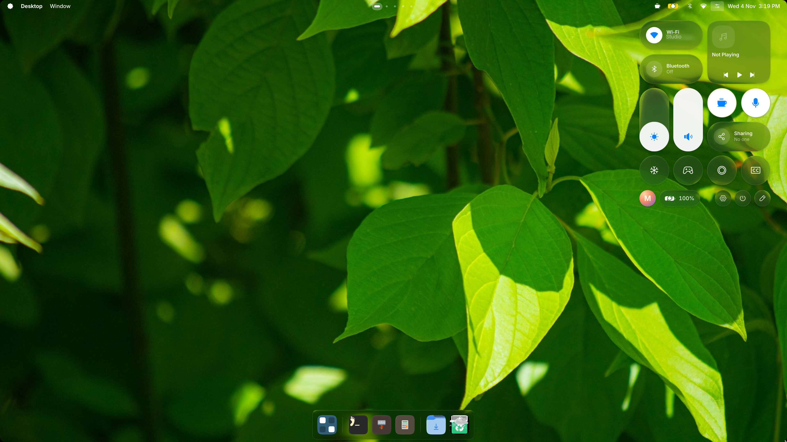
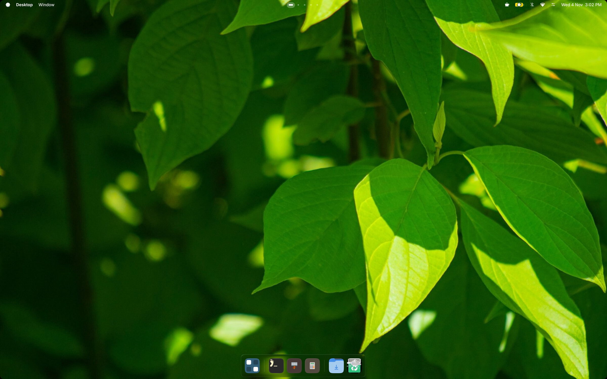
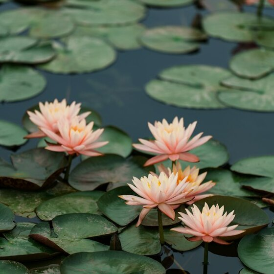
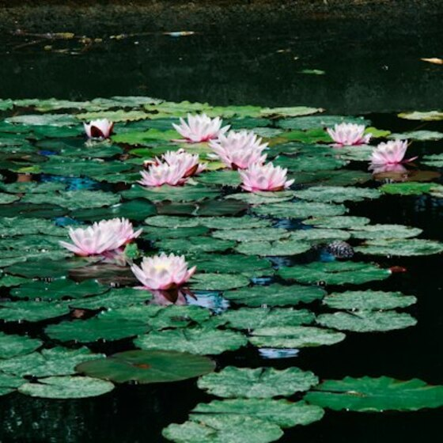
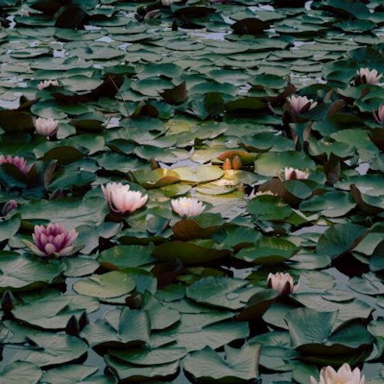
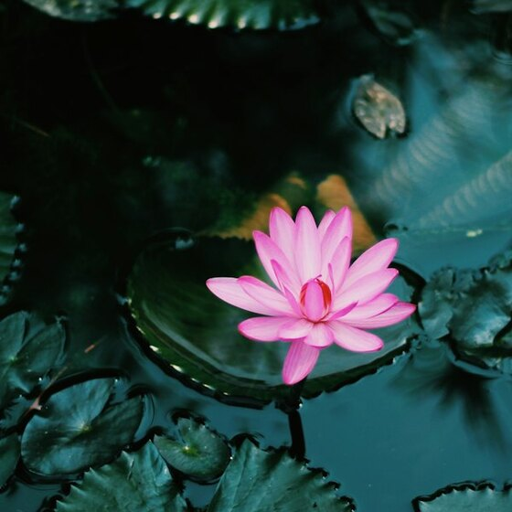
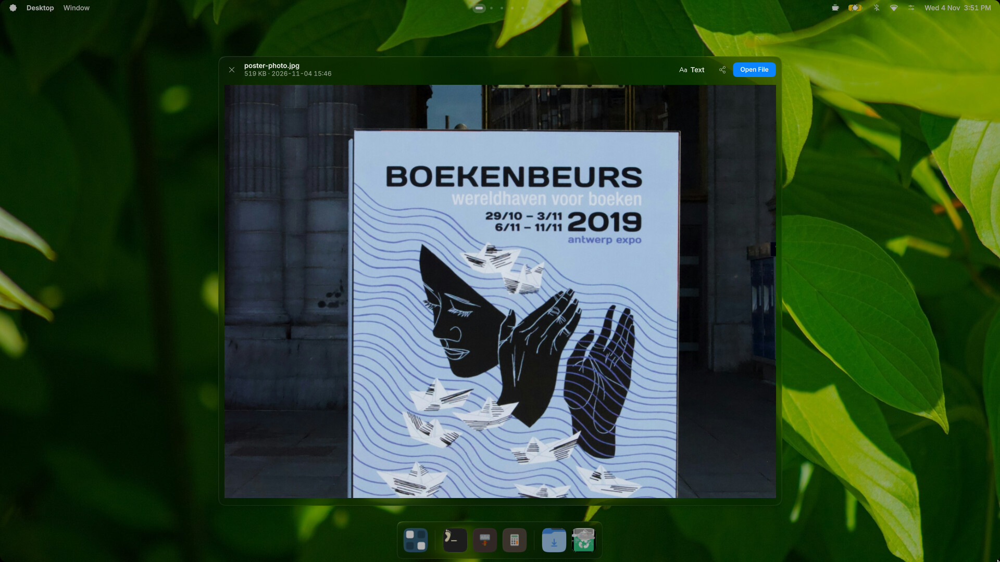

Pairing mode

2 selected
Quick Share
Nearby devices
Maya's laptopLaptop
Studio tabletTablet
Sam's phonePhone
2 photos receivedFrom Maya's laptop
Earbuds, found.
Phones and laptops, shared.
0
18% of 2450 · Enter copies it

Search by picture
Water lily
Nymphaea · a flowering plant of still fresh water
White water lilyLily pondPond plants
Visual matches





Text from picture
Copy text


Live Captions
Listening…
Groceries

Everything, at a glance.
Just ask…
Circle anything.
Copy text from pictures.
…ask anything.
Captions, live.
Just say it.
Bedside Mode, while it charges.
Unlocks with a look, or a touch.
All in glass.
Or Material.
Colours that follow you.
Tessera